2014
Cleantec Engineering
Drafter
Started my Singapore career producing cleanroom layouts, fabrication drawings and technical coordination information.
ZWE HTET AUNG · BIM & DIGITAL ENGINEERING
I connect construction knowledge with BIM, automation and visualisation. Turning complex projects into clearer possibilities.
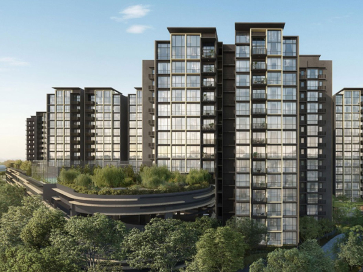
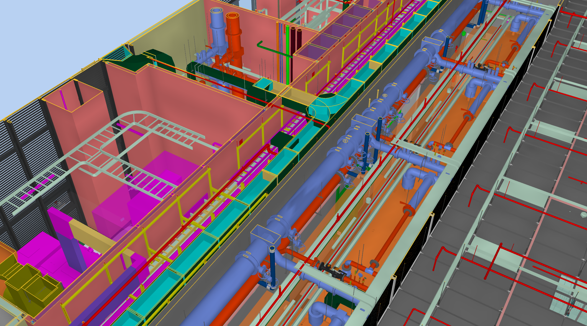
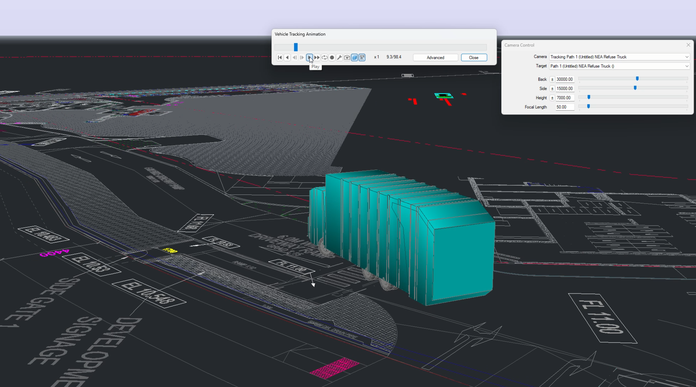
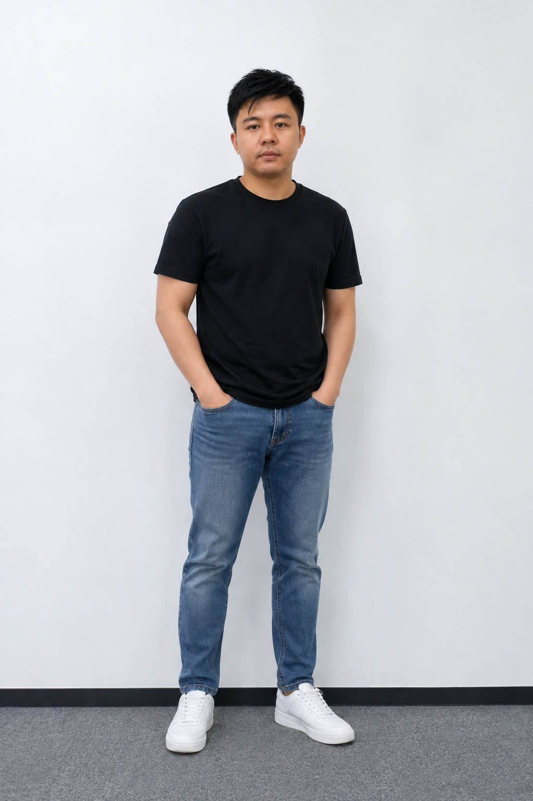
BIM coordination · Revit automation · 4D sequencing · VR · Digital fabrication
SELECTED WORK
CAREER JOURNEY
A career built through project delivery, coordination, leadership and continuous experimentation with new tools.
Started my Singapore career producing cleanroom layouts, fabrication drawings and technical coordination information.
Combined site delivery, electrical and ELV coordination with my first practical Revit and BIM responsibilities.
Represented the company in multidisciplinary coordination, managed live model updates and supported junior modellers.
Delivered coordination across residential and PPVC projects while expanding into 4D, swept paths, VR, 3D printing and Revit automation.
Building toward a role where BIM delivery, automation, visualisation and digital products come together.
CAPABILITIES
My strongest skill is connecting construction knowledge with the right digital method.
Revit modelling, multidisciplinary coordination, clash review, constructability and coordinated issue communication.
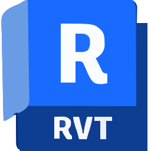
Revit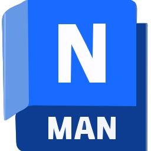
Navisworks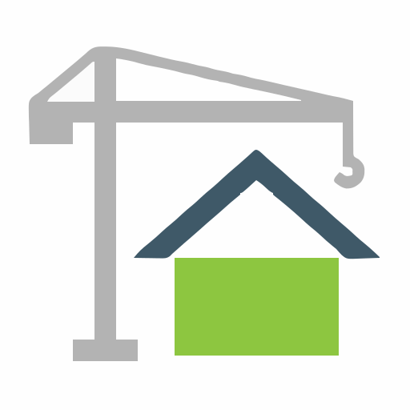
Dalux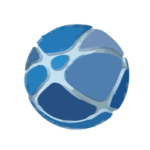
ACCTurning repetitive BIM workflows into practical tools, interfaces and repeatable digital processes.
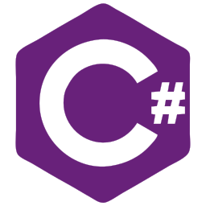
C#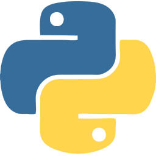
Python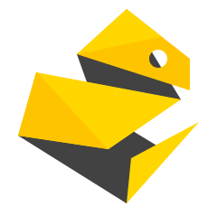
pyRevitExplaining programme, sequence, access and spatial intent through clear visual storytelling.
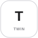
TwinmotionVehicle movement studies and BIM-to-print workflows that turn digital information into decisions and physical models.
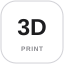
3D Printing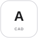
AutoCADABOUT
I combine construction coordination experience with modelling, visualisation and software development. My work focuses on resolving real project constraints, improving repetitive workflows and communicating complex information clearly.
CONTACT